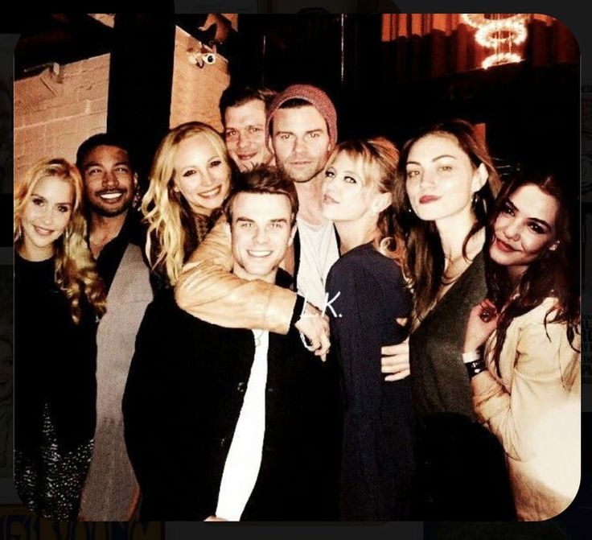

A história dos Originais
Uma família. Mil anos de segredos. Uma cidade que nunca esquece.

Séculos antes dos acontecimentos de The Vampire Diaries, os Mikaelson se tornaram os primeiros vampiros da história. Imortais, poderosos e incapazes de morrer facilmente, eles atravessaram gerações carregando uma promessa: permanecerem juntos para sempre.
Porém, a eternidade não trouxe paz. Traições, perseguições e conflitos internos transformaram a família em uma das forças mais temidas do mundo sobrenatural.
Quando Klaus retorna a Nova Orleans, descobre que a cidade que sua família ajudou a construir está sob o controle de Marcel Gerard, seu antigo protegido.
O nascimento de Hope, filha de Klaus e Hayley, muda completamente o destino da família. Agora, os Mikaelson precisam enfrentar inimigos, profecias e seus próprios demônios para proteger a última esperança de sua linhagem.
Personagens principais
Conheça os membros da família Mikaelson e seus aliados.
Temporadas
A trajetória da família ao longo da série.
Temporada 1
Klaus retorna a Nova Orleans e descobre que Marcel controla a cidade.
Temporada 2
A família enfrenta novos inimigos, antigas maldições e a ameaça de Dahlia.
Temporada 3
Uma profecia coloca os Mikaelson diante de seu destino mais perigoso.
Temporada 4
Cinco anos depois, a família precisa se reunir para salvar Hope.
Temporada 5
O último capítulo da família Mikaelson e o destino de Klaus e Elijah.
“Sempre e para sempre.”
A promessa que uniu uma família durante mil anos.